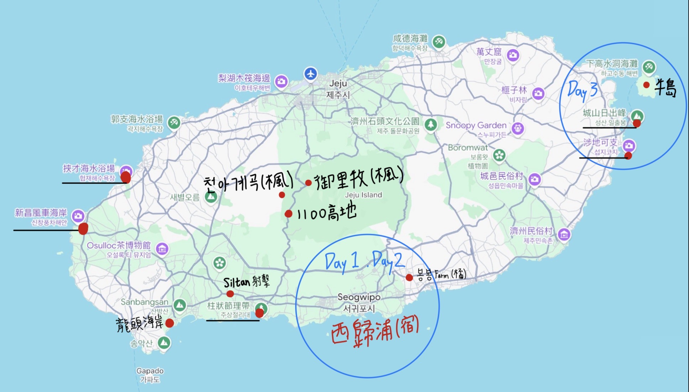

照著地圖，順著路線走
時間
航班資訊
去程｜真航空 LJ942｜2026/11/8（日）
02:45 桃園機場 TPE・第一航廈 起飛 → 06:05 濟州機場 CJU 抵達。
回程｜易斯達航空 ZE885｜2026/11/11（三）
22:40 濟州機場 CJU 起飛 → 11/12（四）00:05 桃園機場 TPE・第一航廈 抵達。
以上時間均為各機場當地時間；韓國比台灣快 1 小時。去程是 11/8 凌晨班機，需於 11/7 晚間前往桃園機場，依航空公司報到要求安排。
回程建議 20:00 前完成還車，目標 20:20 左右抵達機場，為 22:40 航班預留報到、安檢、出境及免稅品提貨時間；實際接駁與報到時間依店家、航空公司公告。
山林的秋色
抵達機場・The Safe 取車
入境、領行李後，依 The Safe 訂單指示前往取車。官網目前列 07:00 起可取車，06:05 抵達後不急著趕；預留入境、接駁與辦理手續時間，若延誤就縮短市區散步。
沿著西岸追海
橘子、離島與暮色
睡飽再出發・市區購物日
The Safe 還車・驗車
預計 19:30 抵達 The Safe，20:00 前完成驗車，再依訂單安排搭接駁前往機場。事先確認接駁發車與行車時間，目標 20:20 左右抵達機場。
機場接駁・報到・免稅提貨
目標 20:20 左右抵達濟州機場，辦理 ZE885 報到與行李託運，再完成安檢、出境及免稅品提貨。22:40 起飛，請依登機證時間提早到登機門。
抵達桃園・第一航廈
抵達時間為台灣當地時間，已跨到 11/12；返家接送或停車預約請填 11/12 凌晨，並留入境及領行李時間。
讓行程走得順的小提醒
- 賞楓：11 月上旬的高海拔楓況可能已過盛期，無法保證滿山紅葉。山路遇雨霧或結冰時，改市區休息；御里牧與溪谷都只排短程往返。
- 第一天順序：依你的想法先御里牧、再溪谷，會有一小段折返；若想少開山路，可將這兩站互換。疲倦時優先刪除 1100 高地。
- 第二天取捨：龍頭海岸受潮汐、浪況影響，可臨時封閉。若延誤超過 30 分鐘，縮短海岸停留，優先保留射擊預約；不另加茶博物館。
- 射擊：官網目前列 10:00–19:00、最後入場 18:30；出發前核對預約時段、參加條件與護照要求，並確認是圖中想去的店。
- 牛島：一般租車上島有限制，本行程將 The Safe 租車停在城山港，人搭船往返；島內交通另計。船班依季節及天氣變動，當天先確認回程與末班，勿把末班當目標。
- 牛島停航備案：採橘子 → 涉地可支 → 城山周邊／海景咖啡 → 飯店。第 4 天維持晚點出發，直接回市區購物。
- 橘子農場：圖片手寫店名暫辨識為「봉봉」，尚未確認確切店家及早場。地圖按鈕是搜尋入口，不代表已核實的店址；訂好農場後再校正車程。
- The Safe 取還車：官網目前列取還車時段 07:00–22:00，還車地址為 36 Yongmun-ro；客服時段另列 07:00–20:00。第一天 07:00 後取車；最後一天改為 19:30 抵達、20:00 前完成還車，銜接 22:40 ZE885，實際接駁流程以訂單與店家通知為準。
韓文導航字詞・一鍵複製
點選任一景點右側「地圖」可開啟 Naver Map 搜尋；導航前確認停車場或入口。
御里牧：어리목탐방지원센터
天阿溪谷：천아계곡
挾才：협재해수욕장
新昌風車海岸：신창풍차해안도로
龍頭海岸：용머리해안
柱狀節理：대포주상절리
射擊場：제주실탄사격장
城山港：성산포항종합여객터미널
牛島：우도
城山日出峰：성산일출봉
涉地可支：섭지코지
月汀里：월정리해수욕장
咸德：함덕해수욕장
東門市場：동문재래시장
新羅免稅店濟州店：신라면세점 제주점
The Safe Rent a Car：더세이프렌터카（還車地址：36 Yongmun-ro）

四天三夜・花費估算
試算假設：5 人共乘 1 車，租車確認總價 NT$6,457；住宿每人每晚上限 NT$1,200，3 晚最多 NT$3,600／人。以下先按你提供的金額為新台幣計算，不另假設房型；全員參加射擊、牛島搭巴士。
租車為已知金額，住宿為預算上限，其他項目仍為估算；不含機票、免稅購物與伴手禮。韓元換算暫用 ₩1,000 ≈ NT$24，並非即時換匯或刷卡匯率。
| 項目 | 計算基礎 | 每人估算（新台幣） | 說明 |
|---|---|---|---|
| 租車 | NT$6,457／車，5 人分攤 | NT$1,291.4 | 已確認總價；保險、加購及其他費用是否包含，以訂單為準。 |
| 油資 | ₩80,000–120,000／車，5 人分攤 | NT$384–576 | 每人 ₩16,000–24,000；電車則改計充電費。 |
| 停車費 | ₩20,000–40,000／車，5 人分攤 | NT$96–192 | 每人 ₩4,000–8,000，含城山港、市區與景點停車預留。 |
| 住宿 3 晚 | 每人每晚上限 NT$1,200 | 最多 NT$3,600 | 兩晚西歸浦＋一晚城山；以每人上限計，不假設房型。 |
| 四天餐飲 | ₩140,000–200,000／人 | NT$3,360–4,800 | 含早餐、午餐、晚餐；烤肉或海鮮聚餐較多可抓上限。 |
| 咖啡、點心 | ₩20,000–40,000／人 | NT$480–960 | 含咖啡、牛島花生冰淇淋等，不與餐費重複。 |
| 牛島來回船票與必要費用 | ₩12,000–16,000／人 | NT$288–384 | 預算額，並非確認票價；以城山港當日售票為準。 |
| 牛島島內交通 | ₩8,000–12,000／人 | NT$192–288 | 以巴士移動預留；租電動車或腳踏車需另估。 |
| 採橘子體驗 | ₩10,000–20,000／人 | NT$240–480 | 農場及可帶走橘子數量尚未確認。 |
| 實彈射擊 | ₩35,000／人（12 發） | NT$840 | 官網一般價；不參加可扣除此項。 |
| 其他門票 | ₩5,000–10,000／人 | NT$120–240 | 龍頭海岸、柱狀節理等；不含城山登頂票。 |
住宿按上限計，每人基本預算約 NT$10,900–13,700
另加約 10% 緩衝，建議每人抓 NT$12,000–15,100。
這個區間將 3 晚住宿均按每晚 NT$1,200 計入；若住宿較便宜，可再扣除差額。5 人基本預算合計約 NT$54,500–68,300；含緩衝約 NT$60,000–75,500。
租車分攤：NT$6,457 ÷ 5 = NT$1,291.4／人；若以整元收款，可由 2 人各付 NT$1,292、3 人各付 NT$1,291，合計正好 NT$6,457。
共同車輛支出（租車、油資、停車）估計合計 NT$8,857–10,297／車，5 人分攤約 NT$1,771–2,059／人，已包含在上方總預算內。
現金可先抓每人 ₩100,000–150,000 作市場、小吃及零星支出，其餘依店家付款方式安排；這筆現金包含在上方總預算內，並非額外加收。
更新：2026/10/16。租車總價與住宿上限依你提供的金額；其餘為規劃預算。射擊價格來源：濟州實彈射擊場官網。住宿訂妥後再以實付金額更新。